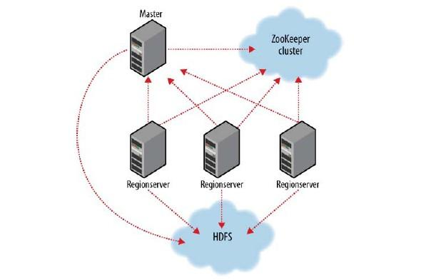
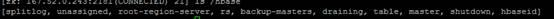
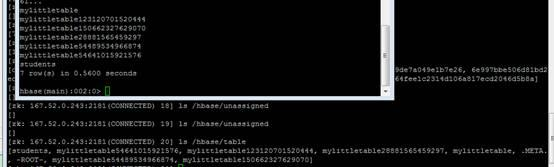
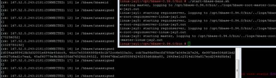
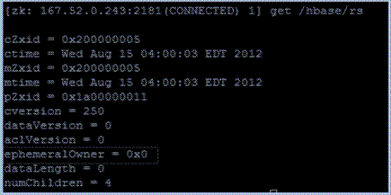

Zookeeper在HBase中的应用
HBase部署相对是一个较大的动作，其依赖于zookeeper cluster,hadoop HDFS。

Zookeeper作用在于：
1、hbase regionserver 向zookeeper注册，提供hbase regionserver状态信息（是否在线）。
2、hmaster启动时候会将hbase系统表-ROOT- 加载到 zookeeper cluster，通过zookeeper cluster可以获取当前系统表.META.的存储所对应的regionserver信息。
zookeeper是hbase集群的"协调器"。由于zookeeper的轻量级特性，因此我们可以将多个hbase集群共用一个zookeeper集群，以节约大量的服务器。多个hbase集群共用zookeeper集群的方法是使用同一组ip，修改不同hbase集群的"zookeeper.znode.parent"属性，让它们使用不同的根目录。比如cluster1使用/hbase-c1,cluster2使用/hbase-c2，等等。
HMaster主要作用在于，通过HMaster维护系统表-ROOT-,.META.，记录regionserver所对应region变化信息。此外还负责监控处理当前hbase cluster中regionserver状态变化信息。
hbase regionserver则用于多个/单个维护region。
region则对应为hbase数据表的表分区数据维护。
参考：http://koven2049.iteye.com/blog/1150484
hbase.zookeeper.zookeeperwatcher.java 类
ZooKeeper Watcher. One instance of this is instantiated for each Master, RegionServer, and client process. 每一个Master、RS和客户端进程都会创建一个zookeeperwatcher的实例。
1、初始化ZooKeeper连接和watcher
① 设置节点名称
② ZKUtil.connet
③ 如果连接成功，则新建一些节点，如ZKUtil.createAndFailSilent(this, baseZNode); 如果节点存在，则不再创建。不加watch。此处创建的是持久性节点，并具有open access性。
HBase中的znode
/hbase baseZNode
|
Node name (fault)
|
节点分类
|
|
ZookeeperWatcher初始化时创建
|
|
/hbase
|
baseZNode
|
集群的根znode
|
√
|
|
/hbase/root-region-server
|
rootServerZNode
|
包含-ROOT- region的服务器位置的节点
|
|
|
/hbase/rs
|
rsZNode
|
RS的临时节点
|
√
|
|
/hbase/draining
|
drainingZNode
|
draining RS 临时节点
|
√
|
|
/hbase/master
|
masterAddressZNode
|
currently active master
|
在hbase.master.Hmaster中创建
|
|
/hbase/backup-masters
|
backupMasterAddressesZNode
|
backup master directory, if not the active master
|
√
|
|
/hbase/shutdown
|
clusterStateZNode
|
znode containing the current cluster state
|
|
|
/hbase/unassigned
|
assignmentZNode
|
region transitioning and assignment
|
√在rs启动时会创建该节点的子节点。ZKAssign会操作此节点，并创建子节点来指示rs的状态。
|
|
/hbase/table
|
tableZNode
|
table disabling/enabling
|
√
|
|
/hbase/hbaseid
|
clusterIdZNode
|
containing the unique cluster ID
|
|
|
/hbase/splitlog
|
splitLogZNode
|
log splitting work assignment
|
√
|
ZooKeeperWatcher的构造函数的作用就是初始化一个ZooKeeper连接并设置watcher。因此在ZookeeperWatcher初始化时创建的节点，表示只要HBase在连接ZooKeeper时就会创建这些节点。
1、 /hbase的子节点：

2、 HBase中的list命令和/hbase/table下的子节点对比：前者不包括-ROOT-和.META.表：

3、 启动HBase时，/hbase/unassigned节点的变化：

ZooKeeperListener.java
package org.apache.hadoop.hbase.zookeeper;
抽象类，实现HBase内部ZooKeeper事件的监听。ZooKeeperWatcher会执行适当的方法来实现该类。为了从watcher接收到事件，每个监听者必须要通过ZooKeeperWatcher注册。子类需要重写需要的方法。值得注意的是监听者的watcher在执行这些方法时会引起阻塞，因此不能长期运行这些方法。
在构造函数中就初始化了一个ZooKeeperWatcher。
监听的事件包括nodeCreated(String path)、nodeDeleted(String path)、nodeDataChanged(String path)、nodeChildrenChanged(String path)。
ActiveMasterManager.java
作用：处理所有master方面的master选举的事务。监听并回应master znode的zookeeper通知，包括nodeCreated(节点创建)和nodeDeleted(节点删除)。
包含阻断方法，备master等待主master失败。？
在HMaster构造函数的blockUntilBecomingActiveMaster方法中实例化该类。
实现了抽象类ZooKeeperListener中的nodeCreated(节点创建)和nodeDeleted(节点删除)方法。
HBase中使用zookeeper的场景（未完）
1、主备master切换时
|
应用场景
|
使用类
|
调用函数
|
备注
|
|
Master启动
|
HMaster
|
HMaster（构造函数）
|
连接zookeeper
|
|
主备master切换
|
HMaster
|
becomeActiveMaster(MonitoredTask startupStatus)
|
注册一个Listener
|
|
|
|
HConnectionImplementation
|
|
（见hbase.zookeeper源码-Bene.xlsx中的sheet2）
Zookeeper交流遗留问题
1、Follower和Observer能否写数据，二者主要区别是什么？
ObserverRequestProcessor会将收到的任何修改状态的请求都发送给leader。遇到以下操作时，observer和follower都会发送请求给leader
switch (request.type) {
case OpCode.sync:
zks.pendingSyncs.add(request);
zks.getFollower().request(request);
// zks.getObserver().request(request);
break;
case OpCode.create:
case OpCode.delete:
case OpCode.setData:
case OpCode.setACL:
case OpCode.createSession:
case OpCode.closeSession:
case OpCode.multi:
zks.getFollower().request(request);
// zks.getObserver().request(request);
主要区别：Observer不参与leader选举和投票。
Follower可以写数据，Observer在客户端写数据时不参与，主要通过sync操作更新数据。
二者的主要区别是Follower参与选举和投票，Observer不参与选举和投票。
投票在写数据过程中的作用：客户端发送写数据操作时，follower或者Observer将写数据请求转发给leader，然后leader发送给具有投票权（也就是follower和leader）的角色；当这些节点有半数以上的节点反馈给leader投票，leader则认为写数据成功。
observer是zookeeper-3.3版本新添加的一个角色,，他们的引入是为了解决zookeeper集群扩大后，由于网络可靠性下降可能导致的拜占庭将军问题。
2、写数据的原子性如何保证？
ZooKeeper中读写数据都具有原子性。
读数据的原子性是指读某个节点的数据时，会将该节点所有的数据都返回给客户端。
写数据的原子性是指写数据不会部分失败或部分成功。一个成功的写操作必须保证被写入到大部分zookeeper服务器的永久存储上（不是上次说的所有服务器）。
3、/hbase/rs节点的子节点是持久节点还是临时节点？
临时节点。可以通过在shell脚本查看/hbase/rs节点的数据及其子节点的数据，/hbase/rs是持久节点，其子节点是临时节点，二者如下图。
/hbase/rs是持久节点：

这个znode[linux-jay1.jay,20020,1345715787547]是个临时znode，当该regionserver关闭后，这个znode会消失，那么设置了watcher的master就会第一时间感知到regionserver的退出。
备注：如果是持久节点ephemeralOwner 的值为0。
Get的各个参数解释：
czxid : The zxid of the change that caused this znode to be created.
mzxid : The zxid of the change that last modified this znode.
ctime : The time in milliseconds from epoch when this znode was created.
mtime : The time in milliseconds from epoch when this znode was last modified.
version : The number of changes to the data of this znode.
cversion : The number of changes to the children of this znode.
aversion : The number of changes to the ACL of this znode
ephemeralOwner : The session id of the owner of this znode if the znode is an ephemeral node. If it is not an ephemeral node, it will be zero.
dataLength : The length of the data field of this znode.
numChildren : The number of children of this znode.
4、sync操作的作用是什么？
sync操作的作用是使客户端的znode视图与ZooKeeper同步，由于读操作可能会存在连接的某台zookeeper服务器上的数据并不是最新数据，因此zookeeper允许客户端用sync操作自身更新（如何实现涉及到ZooKeeper内核，目前还没有看这部分内容）。
5、watcher的设置是一次性的，为什么要如此设计？
Watch是由ZooKeeper服务的操作来设置，同时由服务的其他操作来触发，watcher只被触发一次。比如一个客户端对某个znode调用了exists操作并在这个节点上加了一个Watch，如果该节点不存在，则exists操作返回false。如果一段时间后，这个znode被另外一个客户端创建了，该Watch将被触发，通知第一台客户端znode被创建的消息。
由于是针对操作而设置的，因此很容易区别上次交流时所说的状态。 ZooKeeper在读操作exists、getChildren、getData时设置watch，这些操作都由写操作create、delete和setData来触发。
如此看来，并不是所有的操作都会触发watch，也并不是所有的操作都会设置watch。而且通过znode的路径可以确定是哪个znode发生了改变，通过操作的类型可以确定该节点发生了何种改变。个人认为这样设置的确增加了通用性，同时也减少了资源消耗。
另外：
ZooKeeper提供配置服务的手段是：用znode的路径来记录键，用znode的数据来存储值，因此正好可以使用znode来存储键值对。
比如，/hbase/root-region-server的路径表示存储的是-ROOT-表所在服务器的地址，然后用该znode的值来存储其地址值 |  分享
分享 顶
顶